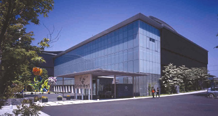
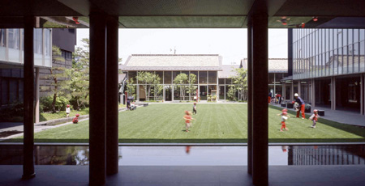

|
  |
| ■建設概要 | |
| 作品名／ | 松本市美術館 |
| 所在地／ | 長野県松本市 |
| 建築主／ | 松本市 |
| 主用途／ | 美術館 |
| 設計監理／ | 宮本忠長建築設計事務所 |
| グラフィックデザイン／ | 田中一光デザイン室 |
| エントランスホール陶板レリーフ／ | 高橋節郎「飛翔」 |
| 屋外彫刻／ |
草間彌生「幻の華」 久保田俶通「松本讃歌」 |
| 施工／ |
建築：間・アスピア・ノグチJV 電気：関電工・西電設JV 空調衛生：須賀・大和JV 植裁：東花園、信州グリーン、奥原造園、竜松園、シンヨー、緑化センター |
| 構造／ | SRC造、一部S造 |
| 階数／ | 地上3階 一部4階 |
| 面積／ |
敷地：10,185.92m2 建築： 3,500.99m2 延床：9,173.84m2 （美術館用途延床：7,741.87m2） |
| 工期／ | 1999年10月～2002年3月 |
| ■ CLOSED |